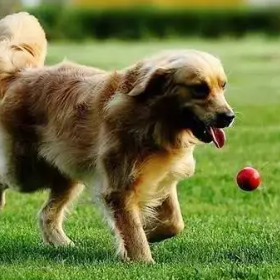
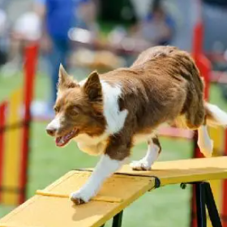
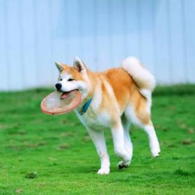

宠物狗网

基本训练
-

1、给小狗取个好听的名字，经常看着它并叫它的名字，让它知道你是在和它打招呼。久而久之，它一听见自己的名字就会屁颠屁颠地过来你跟前，别忘了给它一点狗粮奖励它的听话举动。
-

2、顽皮是大多数小狗的天性，经常在家里撕扯衣服或小孩玩具或者乱吠乱咬。当狗出现这种情况时，主人应该及时的阻止，不要给它食物，否则它会因此认为它做的是正确的。应该适时给予它一些惩罚，比如关一会厕所，把玩具和食物藏起来都是行之有效的方法。
-

3、给狗狗佩戴一个适合的锁链，经常性的带它出去散散步透透风，老是闷在家里狗狗也会烦闷，带它出去开开眼界，到人多的地方走一走，听听不同的声音。
-

4、一定不能打骂狗狗，会给狗狗留下难以磨灭的印象的。尤其是小狗狗，还会让狗狗对你产生畏惧的情感，失去顽皮的天性和对你的依赖。